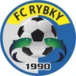

Posledný zápasA-mužstvo · VI. liga Západ, 14. kolo
 TJ Kopčany (domáci)
TJ Kopčany (domáci)Výsledok 7:4
 TJ Slovan Rovnosť Krajné (hostia)
TJ Slovan Rovnosť Krajné (hostia)· TJ Kopčany · prehra
Návrh webu · nie je to oficiálna stránka klubu
VI. liga Západ · 3. miesto z 15 · tréner Lukáš Kodaj
Posledný zápasA-mužstvo · VI. liga Západ, 14. kolo
TJ Kopčany (domáci)Výsledok 7:4
TJ Slovan Rovnosť Krajné (hostia)· TJ Kopčany · prehra
9–3–5výhry, remízy, prehry · skóre 52:35
VI. liga Západ
| # | Tím | Z | V | R | P | Skóre | B |
|---|---|---|---|---|---|---|---|
| 1 |  FC Družstevník Rybky | 14 | 11 | 2 | 1 | 48:18 | 35 |
| 2 | 14 | 9 | 1 | 4 | 37:21 | 28 | |
| 3 | 14 | 8 | 3 | 3 | 46:28 | 27 | |
| 4 | 14 | 8 | 2 | 4 | 31:22 | 26 | |
| 5 | 14 | 8 | 2 | 4 | 24:14 | 26 | |
| 6 | 14 | 8 | 1 | 5 | 41:28 | 25 | |
| 7 | 14 | 7 | 3 | 4 | 28:26 | 24 | |
| 8 | 14 | 6 | 3 | 5 | 24:22 | 21 | |
| 9 | 14 | 4 | 5 | 5 | 22:28 | 17 | |
| 10 | 14 | 5 | 1 | 8 | 20:32 | 16 | |
| 11 | 14 | 5 | 1 | 8 | 29:31 | 16 | |
| 12 | TJ Iskra Horné Orešany | 14 | 4 | 2 | 8 | 26:51 | 14 |
| 13 | 14 | 4 | 1 | 9 | 22:33 | 13 | |
| 14 | 14 | 2 | 1 | 11 | 16:39 | 7 | |
| 15 | 14 | 2 | 0 | 12 | 14:35 | 6 |
Hráči, ktorí v roku 2026 nastúpili alebo boli v nominácii (Sportnet).